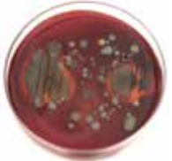
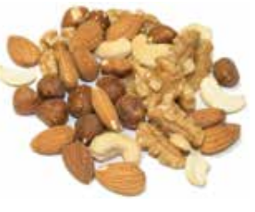
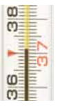

Food Safety Level 2 :
Introduction
Food borne disease
Food borne disease is a serious problem that causes
illness and death in some cases in every country in the
world.
Importantly, most cases of food borne disease can be
prevented, and there are simple steps that can be taken
to reduce the risks and make food safer.
Food safety
Food safety is "assurance that food will not cause harm to the consumer when it is prepared and / or eaten according to its intended use"

Food borne disease is caused by consuming contaminated food, drinks or water.
Who is at risk?
All people are at risk from food borne diseases. However, there are certain people who are at greater risk. These include young children, the elderly, pregnant women and people who have weak immune systems due to illness.
What are the effects?
Food borne disease can cause a wide range of symptoms,
including vomiting, diarrhoea, fever and headache. It
can happen within hours of eating contaminated food, or
take weeks for symptoms to appear. It can also take
hours, days or weeks to recover from
It is important to realise that in some cases, and
especially for people at greater risk, food borne
disease can be fata
What are the causes?
Microbiological hazards such as bacteria and viruses are the major cause of food safety problems in most of the food industry. The causes and prevention of these hazards is therefore the focus of this book.
Introduction
Common Food Hazards
There are three main types of food hazards:
-

1. Microbiological (biological) hazards
For many food businesses microbiological hazards such as bacteria and viruses are the most important. They cause the illness and death of millions of people every year
-
2. Chemical hazards
Chemical contamination can be caused by cleaning and pest control chemicals (e.g. detergents, disinfectants, rat poison). It can cause immediate toxic effects or long-term illnesses (e.g. cancer).
To control chemical hazards, all chemicals must be purchased, stored and used with care.Individual people can also have allergic reactions to naturally occurring chemicals in certain foods (e.g. nuts, seafood, milk, wheat, soya). Businesses need to be aware of common food allergens so they can reduce the risks of contamination and ensure correct information is given to customers.
-
3. Physical hazards
Physical contamination can range from unpleasant quality issues (e.g. hair in food) to serious food safety issues (e.g. glass in food).
To control physical hazards, food must be kept covered during transport, storage and display, and food handlers must follow strict personal hygiene rules.
Introduction
Bacteria
Bacteria (e.g. Salmonella, Campylobacter, E-coli) are organisms that are too small to be seen without a microscope. There are thousands of different types of bacteria, and many are harmless. This book will focus on the types of bacteria that cause food borne disease.
Where do bacteria come from?
Bacteria can enter food production areas in many ways:
-
1. Soil/dust
Soil and dust contain many bacteria that can be brought into food production areas on vegetables, food packaging and outdoor shoes
-
2. Pests / pets
Animals and pests can easily spread bacteria.
-
3. Water
Water from some sources can be contaminated with bacteria
-
4. Row Food
Raw food (e.g. meat, poultry, fish and eggs) is usually contaminated with bacteria.
-
5. Food handlers
The human body and clothes worn outside food production areas are a source of bacteria
-
6. Waste
Waste can contain bacteria and can also attract pests.
Introduction
The Growth of Bacteria
The growth of bacteria in food and food production areas
increases the risk of food borne disease.
The following factors affect the growth of bacteria:
-

1. Warmth
Most bacteria will grow between 5°C and 63°C. Human body temperature (37°C) is ideal for bacteria to grow.
-
2. Moisture
Most bacteria require moisture ot grow. THey grow faster on moist food (e.g. cream) than dry food
-
3. Food
Most food that is suitable for people to eat can also support the growth of bacteria, especially meat, poultry, fish and dairy products
-
4. Time
In ideal conditions bacteria can grow very quickly. Within a few hours large numbers may have grown.
-
5. Oxygen
Many bacteria need oxygen to grow. Some need an absence of oxygen.
This book describes how to improve food safety by reducing the growth of bacteria in food and food production areas.
Introduction
Viruses
Viruses are organisms that are much smaller than
bacteria. They cause many outbreaks of food borne
disease.
A typical virus (e.g. Norovirus) usually causes symptoms
such as diarrhoea and vomiting within 2 days of eating
contaminated food. Illness can last 7 days or more
People can become infected with viruses in several ways, including:
- Consuming contaminated food or drink,
- Touching contaminated surfaces or objects and then touching their mouths
- Having direct contact with someone who is infected and showing symptoms.
Because viruses are so small, they can contaminate food
and drink very easily. The slightest contact with
contaminated hands or surfaces can spread a virus.
Viruses are extremely contagious and spread very
quickly, especially through ‘closed’ environments such
as cruise ships, schools and hospitals.
Therefore, to reduce the risk of spreading viruses, it
is essential for food handlers to be ‘fit for work’ (see
page 8 for details), and to follow strict personal
hygiene and hand washing practices at all times.